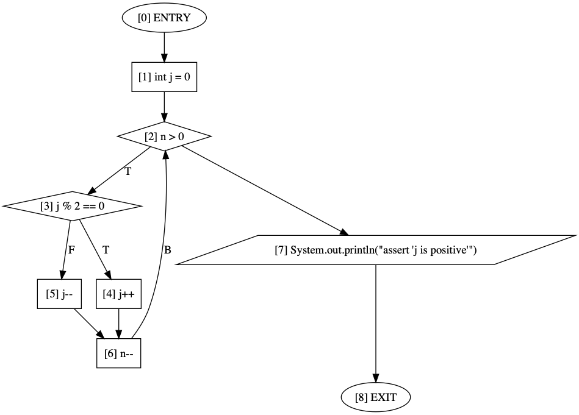
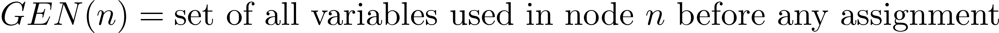
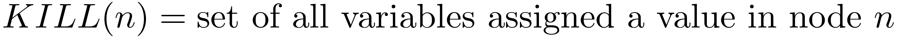
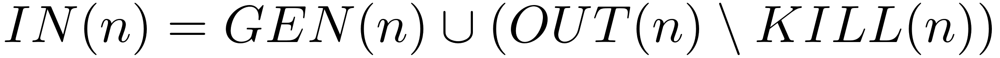
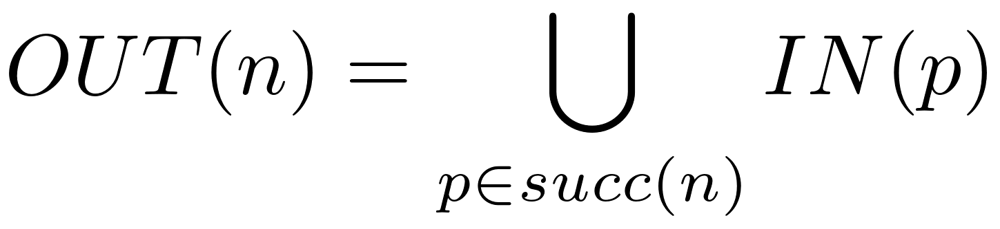
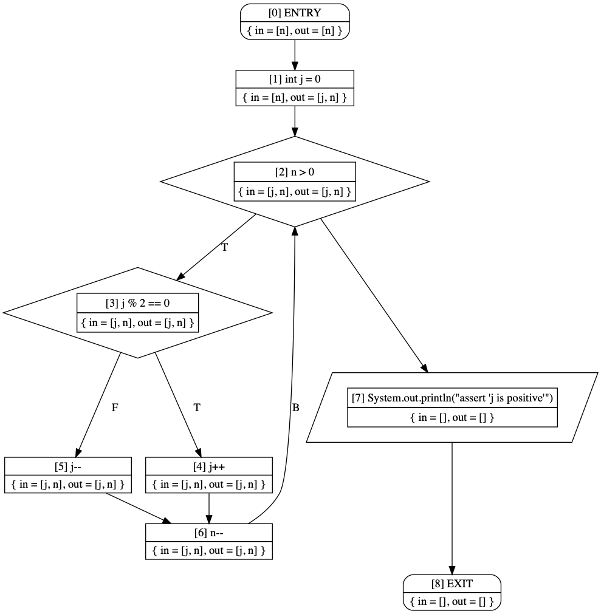

The Boa Programming Guide - Program Analysis
@since 2019-10
Boa supports advanced static analysis capabilities, allowing you to easily perform more complex mining tasks on thousands of projects in parallel. In this section we investigate some of these advanced analysis features.
Building Program Graphs
Boa provides a set of domain-specific functions to automatically generate standard program graphs for you. These graphs include:
- control-flow graphs (CFGs)
- control-dependence graphs (CDGs)
- data-dependence graphs (DDGs)
- program-dependence graphs (PDGs)
All of the generator functions take a single Method as an argument and return a
specific kind of graph for that method. For example, to build CFGs for every
method you could do this:
Every graph type has a nodes attribute, that returns the set of
all nodes in the graph. This can allow you to manually inspect the nodes.
Every node in a graph has a unique identifier and indicates what kind of node it is: an
ENTRY node (used to mark nodes added to the graph for entry or
exit), a CONTROL node to indicate the associated AST node
contained a control point (if statements, loops, etc), a METHOD
node indicating the AST node contained a method call, or any OTHER
kind of node (mostly for sequential nodes).
As an example, consider the following code to generate a control-flow graph for a simple Java-like method:
This code will generate output that can be fed into a tool such as Graphviz Dot to generate the following CFG:

Working directly with the graphs can be a bit cumbersome, so in the next section we will describe language features for writing your program analysis task that operates on these graph types.
Writing Graph Traversals
Consider a rather simple task, where we simply want to print the names of each node in a CFG. To accomplish this, we need to traverse the graph and visit each node in the graph, get the name of the node, and then output that name. While this particular analysis is very trivial, it will allow us to investigate some of the more advanced features offered by Boa. The code for the analysis follows:
In this code, there are 2 important new pieces to note. First, there is now a
traversal (lines 3-5) named printNodes. This
traversal operates similar to a function, and takes a single argument named
n with type CFGNode. It then grabs the name from
that node, and outputs it. This is an example of a traversal function in Boa.
To use a traversal function, on line 10 we call the traverse()
function. This function expects the following arguments: a graph, a traversal
direction (either FORWARD or BACKWARD), a traversal kind (such as DFS,
POSTORDER, ITERATIVE, etc), and the name of a traversal function.
The general form for a traversal function is similar to a user-defined
function, but uses the keyword traversal. It also only takes a
single argument, which is a node of the graph being traversed. Traversals can
optionally return a value. This value is associated with the node for this
traversal. Node values can be retrieved by calling getvalue(n)
for any node n and can be retrieved from other traversals by also
specifying the traversal as a second argument getvalue(n, t).
The general form of a traversal is given below:
Fixed Point Analysis
Many program analyses are iterative, and require a notion of reaching a fixed
point. In order to know if a traversal has reached its final iteration, users
must provide a custom fixed point function. This is a function that takes two
arguments whose type matches the return type of the traversal, and the function
returns a boolean to indicate if it has reached a fixed point or not. This
function is called on each graph node with the current node value and the
previous node value. It must return true for all nodes in order to indicate a
fixed point and terminate the iterations. When calling the
traverse() method, the fixed point function is given as the fifth
and last argument.
The general form of a fixed point function is given below:
Example: Liveness Analysis
Let's consider a slightly more complex analysis. This example is a liveness analysis. We define a variable as live if it holds a value that will/might be used in the future.
To compute this analysis, we first define it as a set of dataflow equations. Every node needs to define both a gen set and a kill set:


Then for each node we compute the in and out sets:


The following traversal handles computing the GEN and KILL sets for every node:
The next traversal will initialize every node's IN and OUT sets to be empty sets (the starting point of the analysis):
Finally we come to the third and last traversal. This is the core of the analysis:
Note that the above three traversals could actually be combined into a single traversal, but we separated them here for clarity.
The next piece of code handles determining when the analysis has reached a fixed point. For this analysis, we consider it at a fixed point if the current in set for every node is identical to the previous in set for the same node:
All that remains is the find methods, build a CFG for the method, and then call the three traversals in the proper order. Note that we also clear out the values for the traversals, otherwise the 2nd method we find would start with the prior method's node values.
If we run this code on the example graph shown at the top of the page, we can see the final result:
